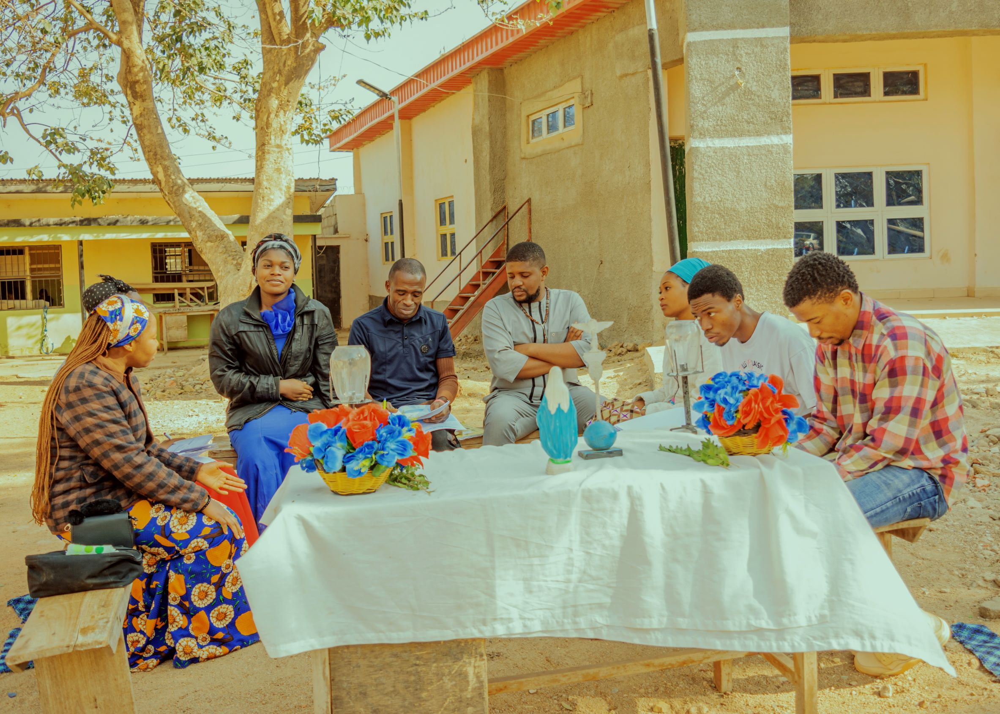

Virgin Most Prudent Senior Curia Jos.
The legion was started in the Archdiocese at St. Theresa’s Parish in 1932. It came to be established in the Parish in the 50s at the Mission School i.e. the Our Lady of Fatima Primary School.....

The legion was started in the Archdiocese at St. Theresa’s Parish in 1932. It came to be established in the Parish in the 50s at the Mission School i.e. the Our Lady of Fatima Primary School.....
The legion of mary is a catholic organization whose members are giving service to the church on a voluntary basis in almost every country.